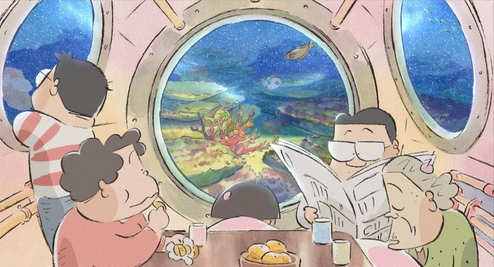

Studio Ghibli may be famous the world over, but not every film in their catalog is as well-known or as well-appreciated. Such is the 1999 film "My Neighbors The Yamadas," directed by Isao Takahata. It was originally dubbed and released by Walt Disney Pictures in North America, at the time "Grave of the Fireflies" was the only Ghibli film the company refused to release due to its subject matter. However, when the catalog slowly released on Bluray in the early 2010's, Walt Disney seemed to be showing wanning interest in the Japanese films: aside from Hayao Miyazaki's films, other recent productions were picked up by indie distributor GKIDS. Eventually, "Yamadas" would become the only Ghibli movie Disney didn't release on Bluray, and the entire catalog would be transferred to GKIDS, giving them the privillage to make this the final Ghibli Bluray release in North America in 2018. Disney always had issues with the respect they show to their films and to home video, but that's another matter...Disney's treatment of "My Neighbors The Yamadas" is not entirely unusual. It was based on a 4-koma (read: Japanese comic in a newspaper's funny pages), which doesn't lend itself well to a feature-length-film-worthy story or character designs. Studio producer Toshio Suzuki tried to promote the film by describing how "film heroes are either those with special skills, or are ordinary people, or something in between," which further suggests that this isn't a dramatic story like the studio's past works, and explains why even in Japan it didn't prove successful. It would also be the first film Ghibli made "entirely using digital animation," which most certainly gave the creators some growing pains. Despite the industry respect for Takahata as a director, he wouldn't direct another film for another decade, and I have no doubt "Yamadas" had to do with that.But art often cannot be judged by the cover. Yes, the family of characters look like they were drawn in 30 seconds and there is no particular story arc. But this is also one of the most experimental films the studio has made, and certian moments give its animators a chance to produce scenes that were more visually beautiful and ambitious than anything they had made at the time, arguably not matched until Takahata's followup "The Tale of Princess Kaguya." Seriously. Right off the bat, the early minutes make it clear this takes its adaptation from the comics seriously, not straying too far from it. There really is NO story, only a series of vignettes ranging from a minute to ten, some ending with relief and human realizations, others ending with slapstick reactions to a punchline. This comedy revolves around the Yamada family, consisting of the hard-working, advice-rambling father, a home-making, but forgetful mother, a proud and stubborn grandmother, a smart-alec son and a younger innocent daughter. The style of the jokes and dialogue feels like Peanuts or Garfield, except with a more Japanese aesthetic. The visual style looks like panels taken directly from the comics, with characters looking deformed and simplfied, with very little movement. But some moments take a more dream-like, fantastical approach to how the characters feel or to portray their familial relationship. This means about 25% of the film is filled with scenes that have a lot of ambitious camera movement and background animation. One early scene shows the mother and father riding a ship through a beautifully-animated storm and ocean waves, as a metaphor to how the daughter imagines their journey from marrage to having children. Another scene shows the family sticking together as they fly through the sky over a detail-filled town. The use of 3D, either as reference models or used directly during these moving shots, is more pervasive here than it is in any other Ghibli movie, sometimes not for the best, but for the most part it allows the artists to make breathtaking scenes. And while I was initially looking at my watch, I was surprised how quickly the film felt by the end. It depends on your mindset when going in, but you could find yourself having a great time, with characters even children could understand and enjoy (only the father's smoking habbit would justify its PG rating). It's good, heartfelt fun. The music is pleasing, mostly folksy Japanese songs. The English dub isn't great, but is fine enough to make the characters feel like a family. I understand that, largely due to the lack of a story, "Yamadas" would rank low on favorite Ghibli films. But it is absoltely worth a watch for animation fans, and could well be a staple for families to watch together.
- "Ani" More reviews can be found at : https://2danicritic.github.io/ Previous review: review_My_Neighbor_Totoro Next review: review_Myriad_Colors_Phantom_World